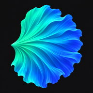
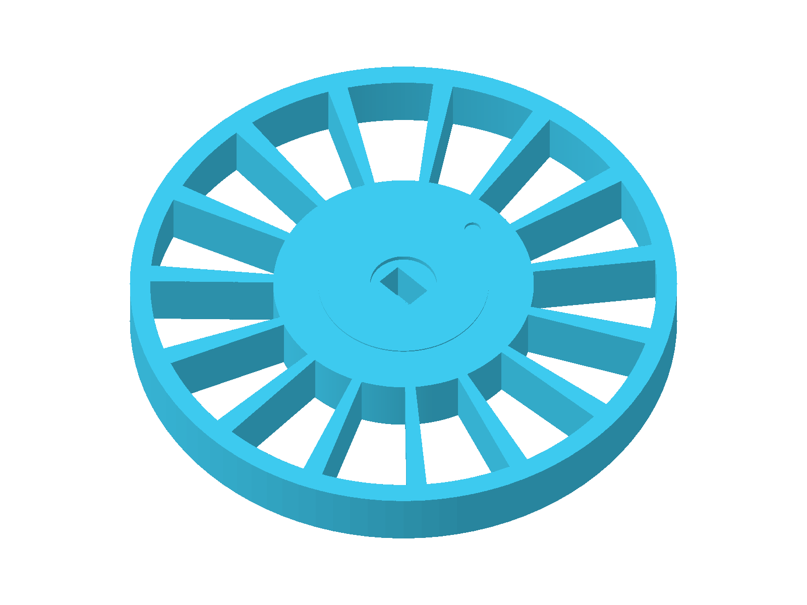
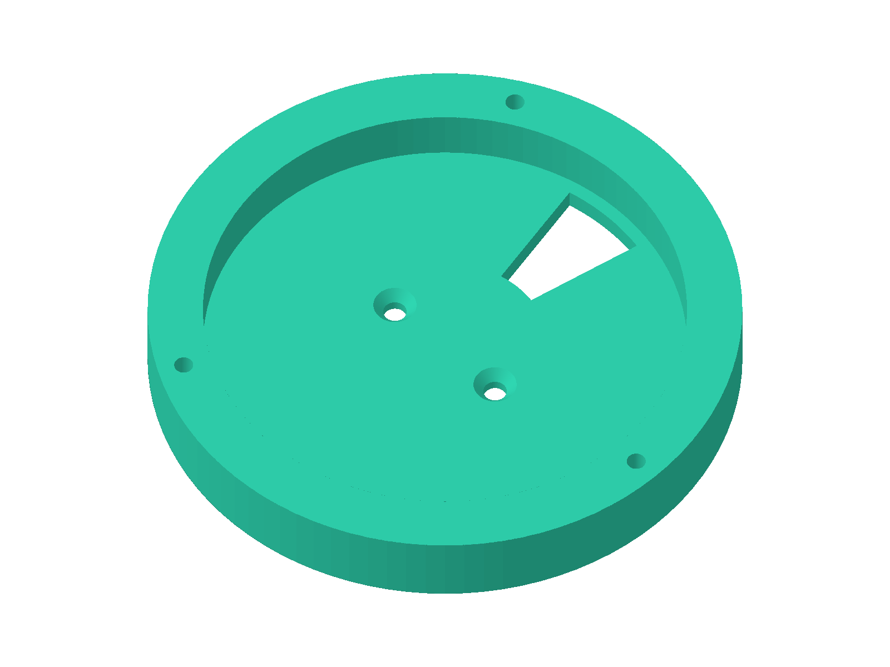
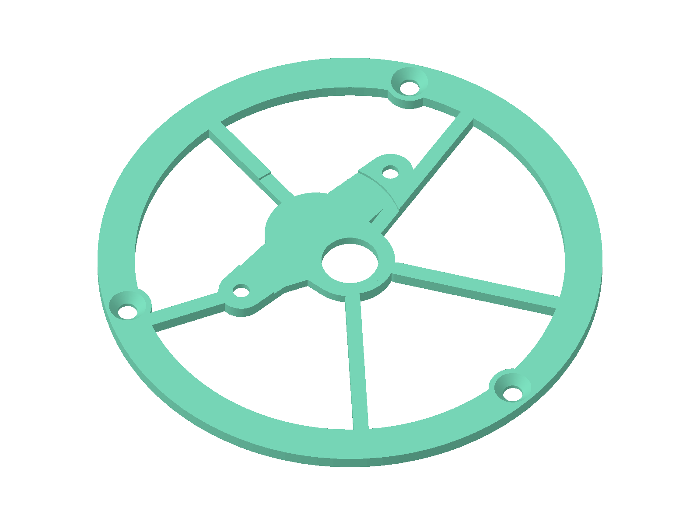
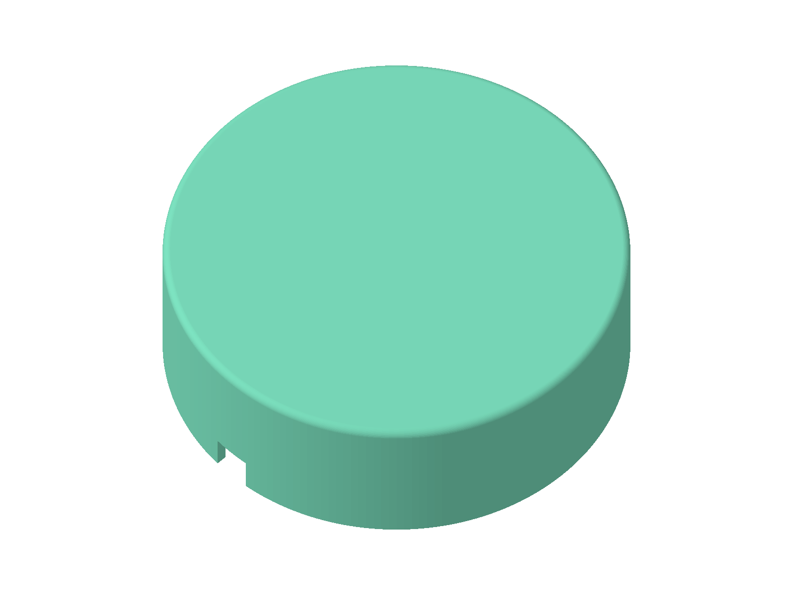
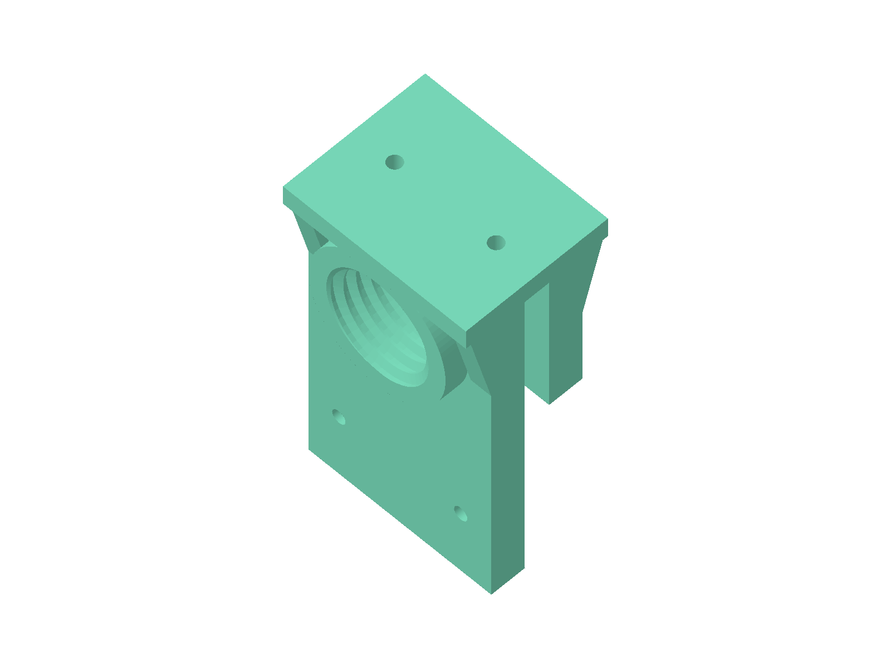
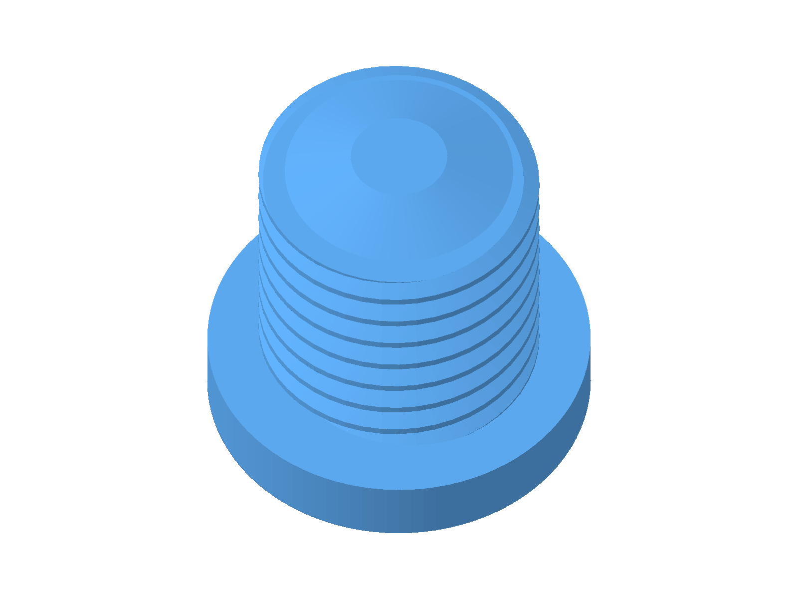
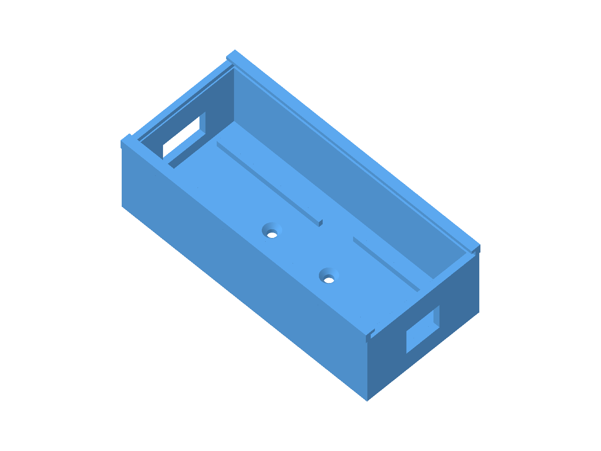
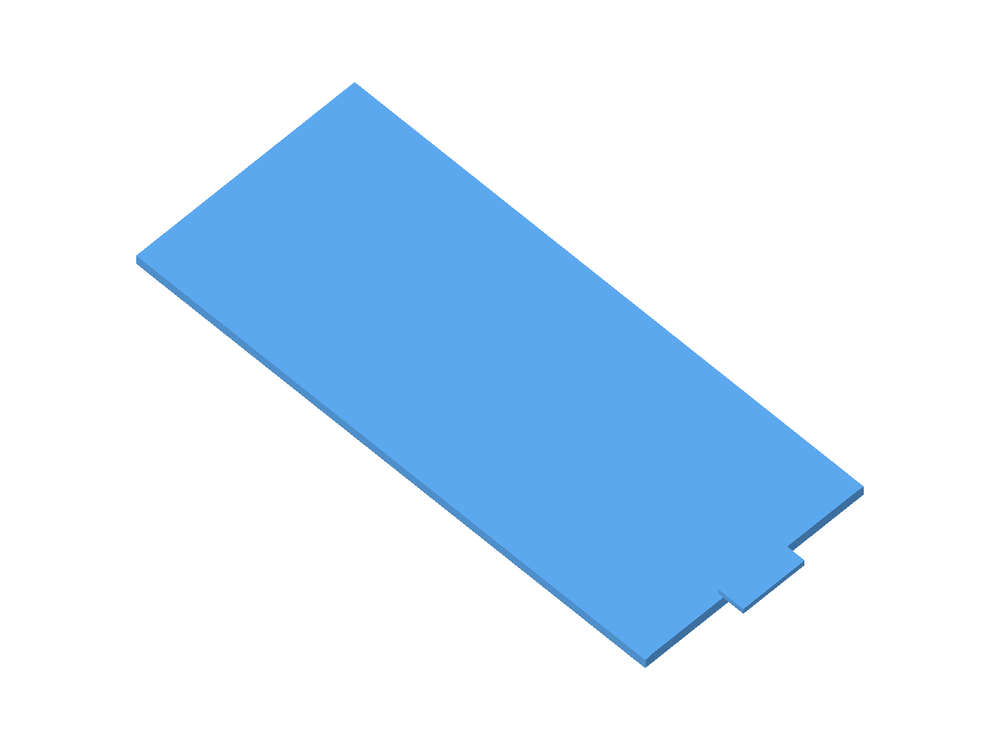
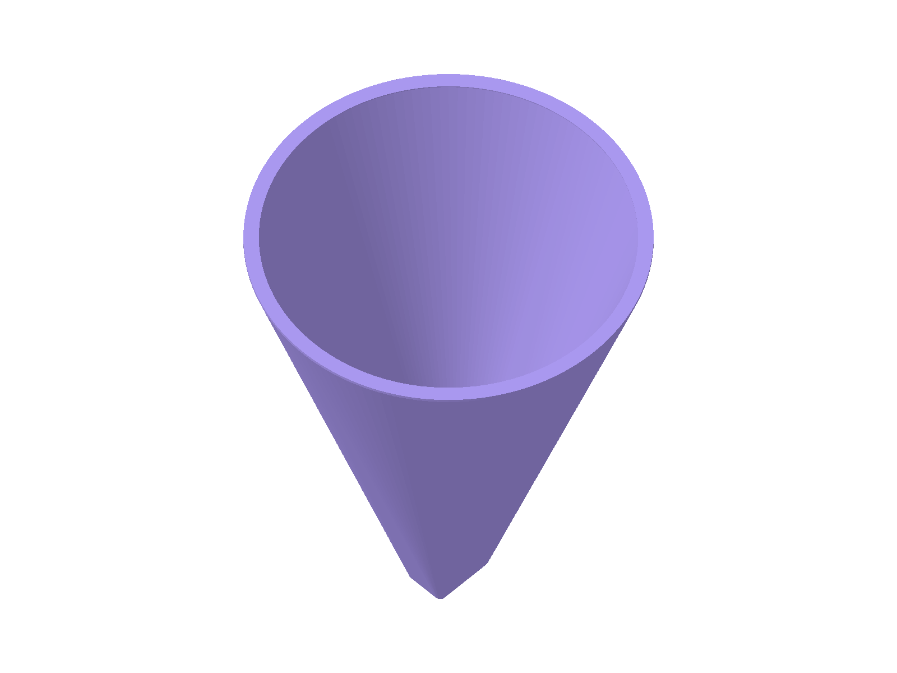

Conecte ao dispositivo
Use Bluetooth Low Energy ou USB Serial para abrir a configuração local do alimentador.

BETTAFEEDERO BettaFeeder é um alimentador automático de ração seca, controlado por ESP32 e configurado pelo celular ou computador. Ele libera as porções nos horários definidos e avisa quando precisa de atenção.

O PWA configura o dispositivo. Depois, o ESP32 cuida dos horários mesmo quando o aplicativo está fechado.
Use Bluetooth Low Energy ou USB Serial para abrir a configuração local do alimentador.
Envie a rede Wi-Fi e defina dois horários. Com internet, o ESP32 acerta o relógio pelo NTP.
Um motor de passo avança uma posição por acionamento e apresenta uma porção no ponto de saída.
Acompanhe o estado e receba alertas de recarga, temperatura ou eventos do alimentador.
O painel mostra o que importa para acompanhar o equipamento e manter a rotina em dia.
Ir para o painel de controleConsulte porções restantes, temperatura da água, hora do ESP32 e conexão Wi-Fi.
Alimente manualmente, ajuste a posição inicial e confirme a recarga pelo PWA.
Notificações push e os eventos recentes ajudam a identificar o que aconteceu.
A senha do Wi-Fi é enviada diretamente ao ESP32 e não é armazenada pelo PWA.
Pré-visualizações renderizadas a partir dos arquivos STL incluídos no projeto. As caixas da eletrônica têm duas opções de tamanho.
Quatorze cavidades recebem as porções. A décima quinta fica vazia e serve como posição de segurança na saída.


Estrutura que acomoda o motor de passo responsável por avançar o rotor.

Peça removível que fecha e protege o conjunto do reservatório.

Prende o alimentador ao aquário e sustenta o conjunto junto ao vidro.

Aperta a presilha contra o vidro do aquário para deixar o alimentador mais firme.

Acomoda a placa ESP32 e o driver ULN2003 do motor.

Encaixa na caixa e fecha o compartimento da eletrônica.

Encaixa sobre o rotor e conduz a ração às cavidades durante a recarga.
↗ Os modelos são componentes individuais do conjunto e podem ser impressos em 3D.
Sketch para gravar no ESP32 e controlar o motor e os horários do alimentador.
BettaFeeder_WiFi_BLE.inoAbra uma pull request (PR) no GitHub com suas melhorias e ideias para o BettaFeeder.
Conecte o BettaFeeder e configure os horários no painel.